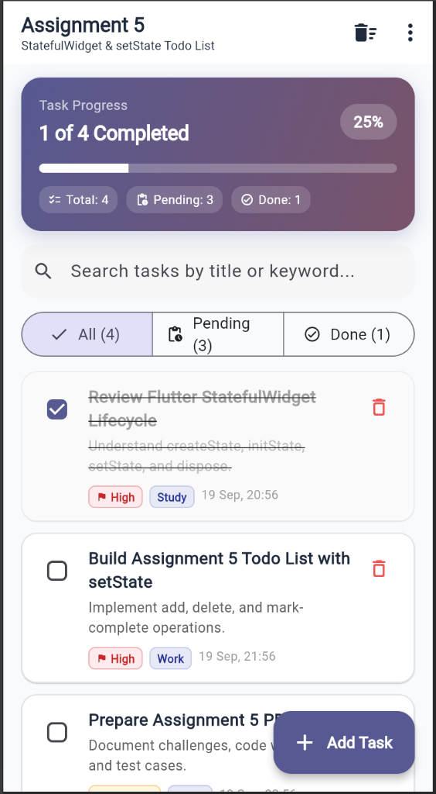
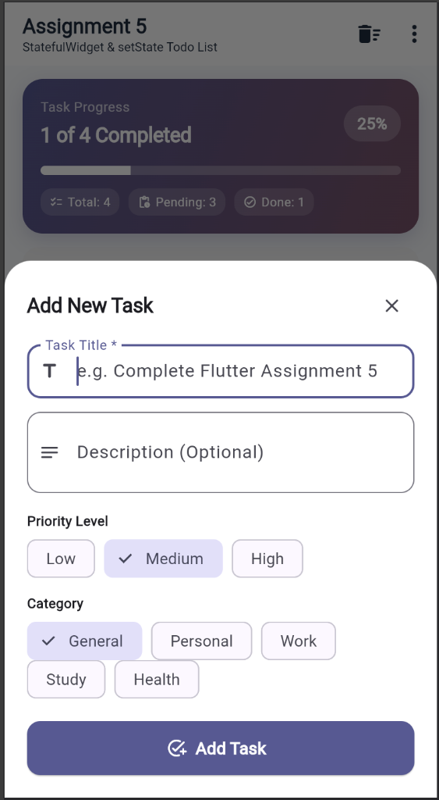
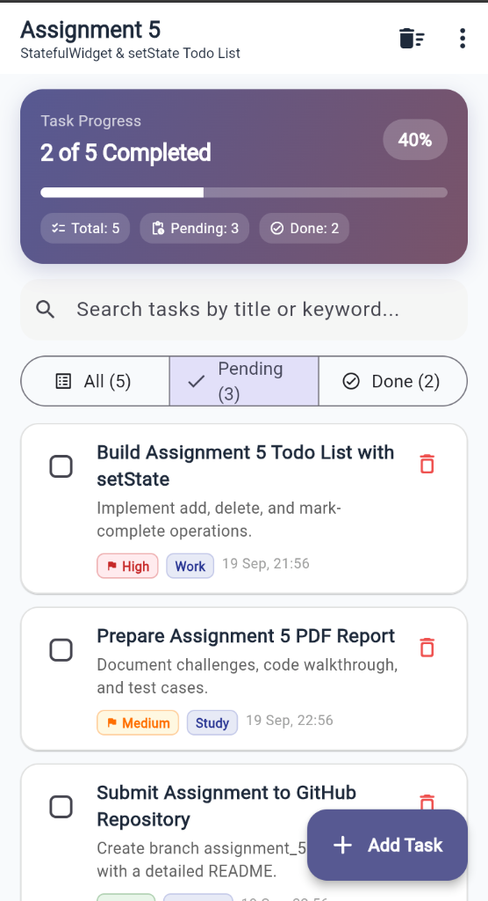
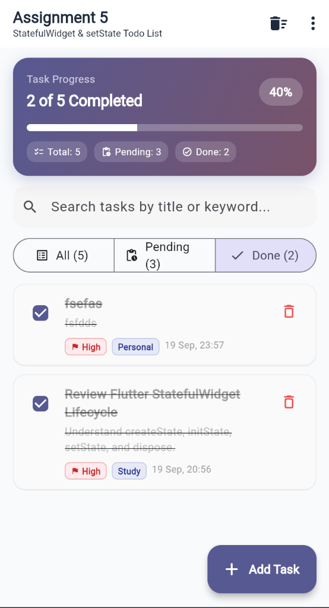

This assignment requires building a fully functional, interactive Todo List in Flutter by mastering StatefulWidget and setState(). The app provides a reactive user experience supporting adding tasks with modal bottom sheet validation, marking tasks as completed with strikethrough styling, deleting tasks via swipe or button with undo support, priority levels, categories, and real-time completion progress tracking.
Opens a modal bottom sheet with required title validation, optional description, priority chips (Low, Med, High), and category tags. Inserts into the state list via setState().
Tapping the custom checkbox mutates the task's isCompleted flag via copyWith(), animating strike-through styling and updating the progress bar.
Uses Dismissible for swipe-to-delete and explicit icon buttons. Triggers a floating SnackBar with an UNDO action to restore deleted tasks.
┌────────────────────────────────────────────────────────┐
│ TodoListScreen │
│ (StatefulWidget & State) │
│ │
│ State Variables: │
│ • List<TodoItem> _todos │
│ • TodoFilter _currentFilter │
│ • String _searchQuery │
└───────────────────────────┬────────────────────────────┘
│
┌─────────────────────┼─────────────────────┐
▼ ▼ ▼
┌──────────────────┐ ┌──────────────────┐ ┌──────────────────┐
│ _addTodo │ │ _toggleComplete │ │ _deleteTodo │
│ │ │ │ │ │
│ setState(() { │ │ setState(() { │ │ setState(() { │
│ _todos.insert( │ │ _todos[idx] = │ │ _todos.removeAt │
│ 0, newItem); │ │ t.copyWith(..);│ │ ); │
│ }); │ │ }); │ │ }); + Undo bar │
└──────────────────┘ └──────────────────┘ └──────────────────┘
│
▼ Triggers Framework Rebuild
┌────────────────────────────────────────────────────────┐
│ UI Components │
│ • TodoStatsCard (Linear progress & completion counts) │
│ • Search Field & FilterBar (All / Pending / Done) │
│ • ListView with Dismissible TodoTile widgets │
│ • FloatingActionButton -> AddTodoSheet │
└────────────────────────────────────────────────────────┘
A. Adding a Task via setState():
void _addTodo(TodoItem item) {
setState(() {
_todos.insert(0, item);
});
ScaffoldMessenger.of(context).showSnackBar(
SnackBar(content: Text('Added task "${item.title}"')),
);
}B. Toggling Completion with Immutable copyWith():
void _toggleTodoComplete(String id, bool? isCompleted) {
final index = _todos.indexWhere((t) => t.id == id);
if (index != -1) {
setState(() {
_todos[index] = _todos[index].copyWith(
isCompleted: isCompleted ?? !_todos[index].isCompleted,
);
});
}
}C. Deleting with Undo Restoration:
void _deleteTodo(String id) {
final index = _todos.indexWhere((t) => t.id == id);
if (index == -1) return;
final removed = _todos[index];
setState(() {
_todos.removeAt(index);
});
ScaffoldMessenger.of(context).showSnackBar(
SnackBar(
content: Text('Deleted "${removed.title}"'),
action: SnackBarAction(
label: 'UNDO',
onPressed: () {
setState(() {
_todos.insert(index, removed);
});
},
),
),
);
}The application was run and validated in Google Chrome (flutter run -d chrome). The screenshots below demonstrate task addition, progress calculation, completion toggling, and tab filtering:




| Challenge | Technical Solution |
|---|---|
| Predictable State Mutation | Mutating list items in-place can cause subtle bugs where widgets don't redraw. Ensured TodoItem is immutable and utilized copyWith() inside setState(). |
| Dismissible Key Duplication | Using raw index keys in Dismissible widgets causes tree collision errors upon item deletion. Enforced globally unique keys (ValueKey(todo.id)). |
| Keyboard Insets in Bottom Sheet | The software keyboard can obscure submit buttons in modal sheets. Resolved by applying MediaQuery.of(context).viewInsets.bottom as bottom padding. |
| Restoring Original Index on Undo | Simply appending an undone item places it at the bottom. Preserved the exact removal index to re-insert the item cleanly with _todos.insert(index, removed). |
The solution includes 9 automated test cases passing with 100% success:
| Test File | Test Description | Result |
|---|---|---|
todo_model_test.dart |
Initializes with expected default values | PASS |
todo_model_test.dart |
copyWith updates fields while preserving unedited values |
PASS |
todo_model_test.dart |
formattedDate produces formatted day, month, and time |
PASS |
todo_model_test.dart |
Equality and hashCode verify value semantics | PASS |
widget_test.dart |
Renders initial tasks and progress summary accurately | PASS |
widget_test.dart |
Toggling task completion updates checkbox and completion stats | PASS |
widget_test.dart |
Adding a new task via AddTodoSheet inserts it into state |
PASS |
widget_test.dart |
Deleting a task removes it from state with working undo action | PASS |
widget_test.dart |
Filter tabs switch between All, Pending, and Completed tasks | PASS |
Ran flutter analyze: 0 errors, 0 warnings, 0 lints. Adheres strictly to Flutter recommended practices and Material 3 design guidelines.